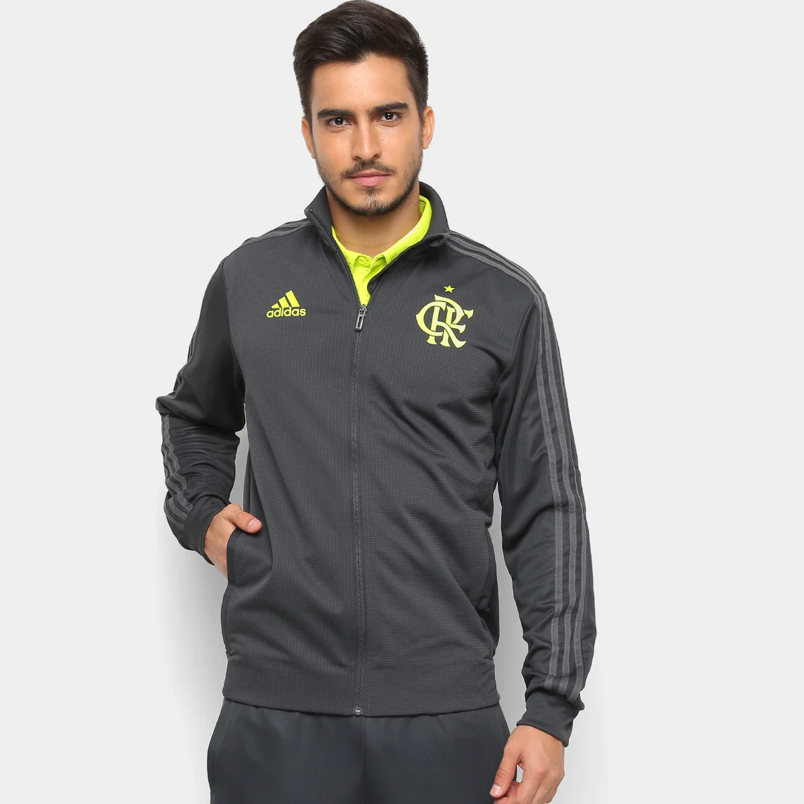
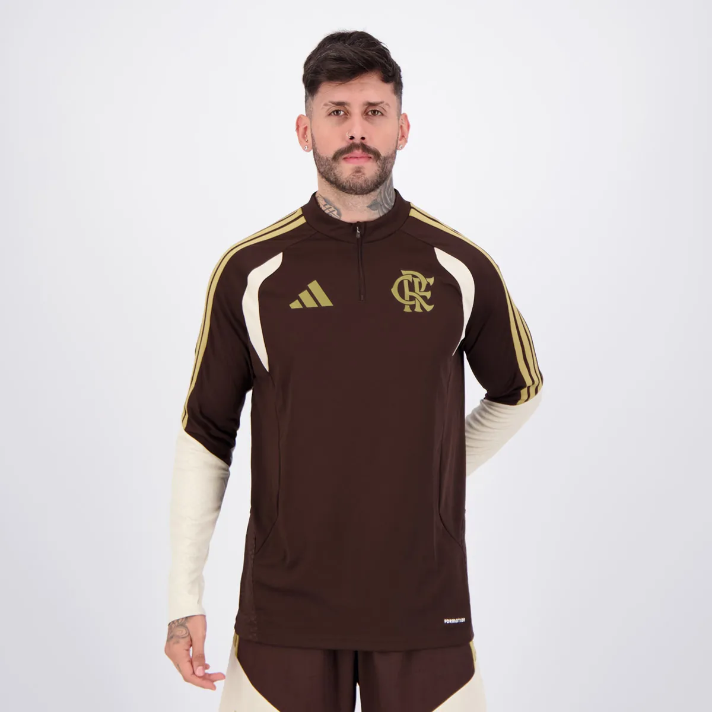
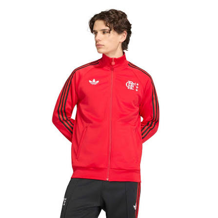
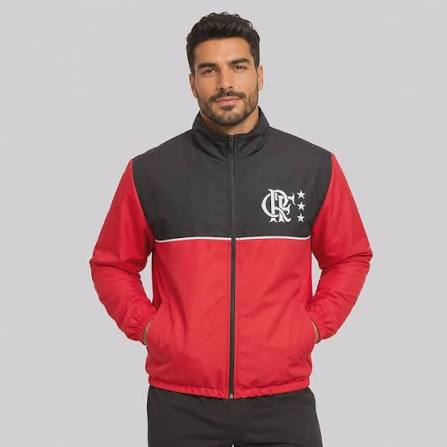
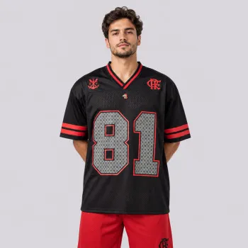

Sobre o Clube
O Clube de Regatas do Flamengo nasceu oficialmente no dia 17 de novembro de 1895 no bairro do Flamengo, no Rio de Janeiro, fundado por um grupo de jovens remadores. Naquela época, o remo era o esporte de elite mais popular da cidade, e os fundadores desejavam um clube próprio para competir e chamar a atenção da sociedade carioca. Inicialmente, as cores adotadas foram o azul e o ouro, mas o tecido importado desbotava facilmente com o sol e a água salgada, o que fez com que o clube mudasse definitivamente para o vermelho e o preto em 1896
O futebol só entrou na história do clube dezesseis anos depois, em 1911, devido a uma crise interna no rival Fluminense. Um grupo de jogadores insatisfeitos decidiu deixar as Laranjeiras e, como muitos deles já praticavam remo pelo Flamengo, propuseram a criação de uma seção de futebol no clube rubro-negro. A proposta foi aceita e, em maio de 1912, o Flamengo disputou sua primeira partida oficial com uma goleada histórica de 16 a 2 sobre o Mangueira, dando início também à lendária rivalidade do clássico Fla-Flu.
Ao longo das décadas de 1930 e 1940, o futebol explodiu em popularidade no país, e o Flamengo começou a construir a maior torcida do Brasil, impulsionado por ídolos de massa como Leônidas da Silva e Zizinho. O clube se destacou por sua forte identificação com as classes mais populares do Rio de Janeiro, deixando de ser um clube aristocrático de remo para se transformar no "Time do Povo". Esse crescimento consolidou a mística rubro-negra e preparou o terreno para o período de maior glória que o clube já veria.
A consagração definitiva e mundial aconteceu na década de 1980, sob a liderança de Zico, considerado o maior ídolo da história do clube. Nessa era de ouro, o Flamengo montou um esquadrão lendário que conquistou três títulos brasileiros, a primeira Taça Libertadores da América e o Mundial de Clubes de 1981, após vencer o Liverpool por 3 a 0. Essa trajetória vitoriosa transformou o Flamengo em uma potência global e estabeleceu o padrão de excelência que o clube busca manter até os dias de hoje.
Uniformes do clube







Portal de Notícias sobre o clube
Bruno Henrique alcança marca de 200 jogos no Maracanã pelo Flamengo
O Maracanã é palco de grandes momentos da história do Flamengo e também da trajetória de Bruno Henrique. Neste domingo (13), o camisa 27 completou 200 jogos no estádio pelo Mais Querido, na vitória sobre o Corinthians, pela 27ª rodada do Campeonato Brasileiro. O camisa 27 ainda marcou o gol que garantiu a vitória rubro-negra. Desde sua estreia no estádio com a camisa rubro-negra, no dia 29/01/2019, na vitória de 3x1 sobre o Boavista, pelo Campeonato Carioca, Bruno Henrique soma 142 vitórias, 34 empates e 24 derrotas, além de 69 gols marcados e 31 assistências. “Como eu sempre falo, eu tô aqui para servir o Flamengo. Sou um cara que trabalha bastante e, quando a oportunidade aparece, tem que fazer jus a vestir essa camisa. Quero agradecer por todo o carinho e por todo o apoio da Nação desde quando eu cheguei aqui. Eles são fundamentais pra mim e por isso que eu dou muito valor a cada torcedor que representa o Flamengo.”, disse o ídolo.
Lucas Paquetá vestirá a camisa 11 outra vez
Lucas Paquetá está de camisa nova. Neste domingo (13), contra o Corinthians, pela 27ª rodada do Campeonato Brasileiro, o meia usará pela primeira vez, desde seu retorno ao Flamengo, a camisa 11, que pertencia a Everton Cebolinha. Antes, Paquetá vinha jogando com o número 20,“Quando cheguei, a única camisa que estava disponível era a 20. Achei legal, pois era o número que o Vini Jr jogava e entendi que era uma homenagem. Mas assim que a 11 ficou vaga pedi para trocar. Era o número que eu usava até ser negociado com o Milan”, explicou Paquetá, que foi para a Itália no início de 2019. Antes de retornar ao Flamengo, em janeiro deste ano, o meia também defendeu o Lyon (França) e o West Ham, de Londres. No clube inglês, o agora camisa 11 rubro-negro, utilizava a 10.
Yan Djalo é o novo reforço do FlaBasquete para a temporada 2026/27
O Flamengo anunciou a contratação do ala-pivô Yan Djalo, de 24 anos e 2,04m de altura, para reforçar a equipe de basquete na temporada 2026/27. Nascido em São Paulo e filho de guineenses, Djalo começou no esporte pelo futebol e migrou para o basquete aos 15 anos. Ele chega ao clube carioca após se destacar pelo Pinheiros, onde viveu o melhor ano de sua carreira na temporada 2025/26.Sua trajetória no basquete competitivo começou em 2018 no Clube Paulista/Overtime, mas foi no Corinthians, a partir de 2019, que ele ganhou projeção nacional. O atleta consolidou seu nome como uma das principais promessas do basquete brasileiro ao se destacar na Liga de Desenvolvimento de Basquete (LDB) de 2021 pelo clube alvinegro, além de ter tido uma breve passagem pelo Basket Osasco.Em 2022, Djalo transferiu-se para o Pinheiros, onde conquistou títulos importantes e evoluiu seu jogo ao longo de quatro temporadas. Pelo clube paulista, ele foi campeão da LDB em 2022 — sendo decisivo na final — e brilhou na edição de 2023 com excelentes médias individuais, ano em que também faturou o título do Interligas LDB na Argentina.